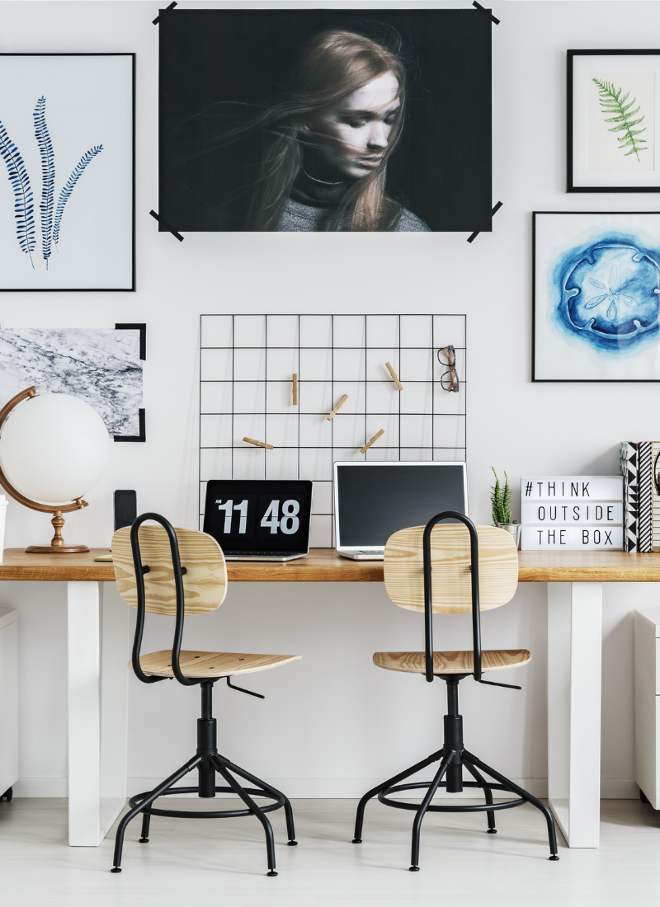
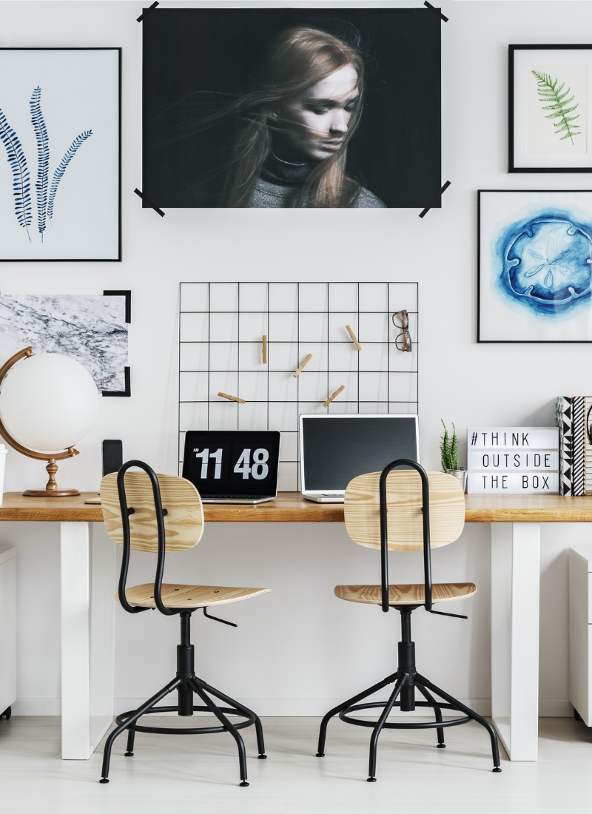

My Work
Here are some of my personal work:(These are img place holders until I complete other projects to replace them)

Welcome to my page, my name is Lehi. I started my journey as a coder this year when my wife started a blog. She needed assistance make her page look more visually appealing and adding images, fonts, and color to her blog. I started researching a lot of information on YouTube and teaching myself about Wordpress blogs.
Throughout my time in figuring out how to change her website, I realized that I had an interest in the front and back end of web design. This led me to apply for the UC Berkeley Coding Bootcamp as I am eager to gain more knowledge and skills.
While many individuals may have a degree, I believe that it is a plus but coding is a hands on skill, which is why I decided to go through the Bootcamp than spend extra time obtaining a degree. I am a hands on learner and would rather spend time learning the material so that I can apply my knowledge and provide for my family.
Here are some of my personal work:(These are img place holders until I complete other projects to replace them)
